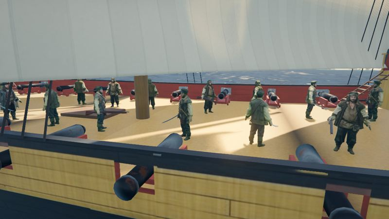
The captain's word
Every station — helm, sails, braces, guns — answers to the captain: captain only, crew, or open to all. Lock the helm and nobody steers her but you. The server enforces it, not good manners.
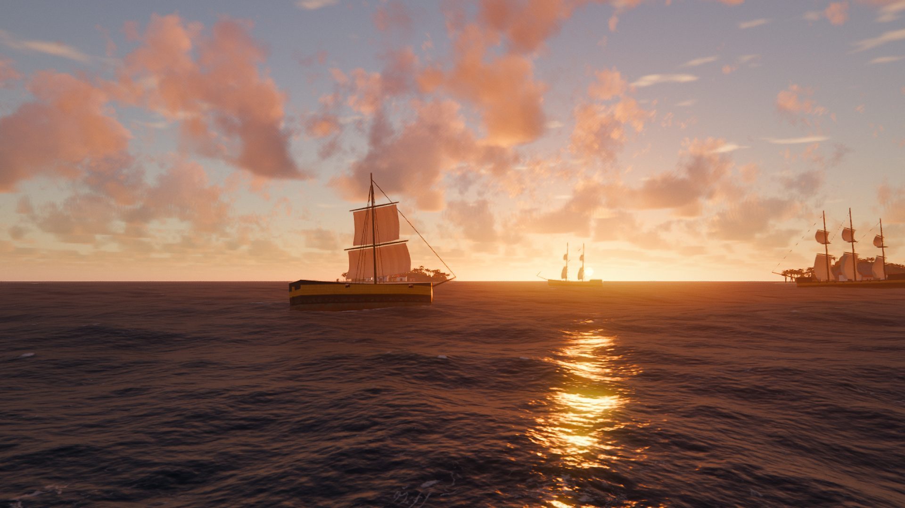
A Kölja Games production
Trade, broadsides and the trade winds.
The West Indies, anno 1718.
In-engine. No paint-overs.
The sea is the game
Salt Meridian is a pirate trading MMO where nothing on the water is faked. Hulls float on the same swell the ocean draws. Sails pull on the apparent wind, so trim and bracing matter. A ship heels because the wind pushed her, and rights herself because her ballast says so.
Sign on as crew, or sail your own. Run cargo between the islands, lay the guns, board, take the helm — if your captain lets you.
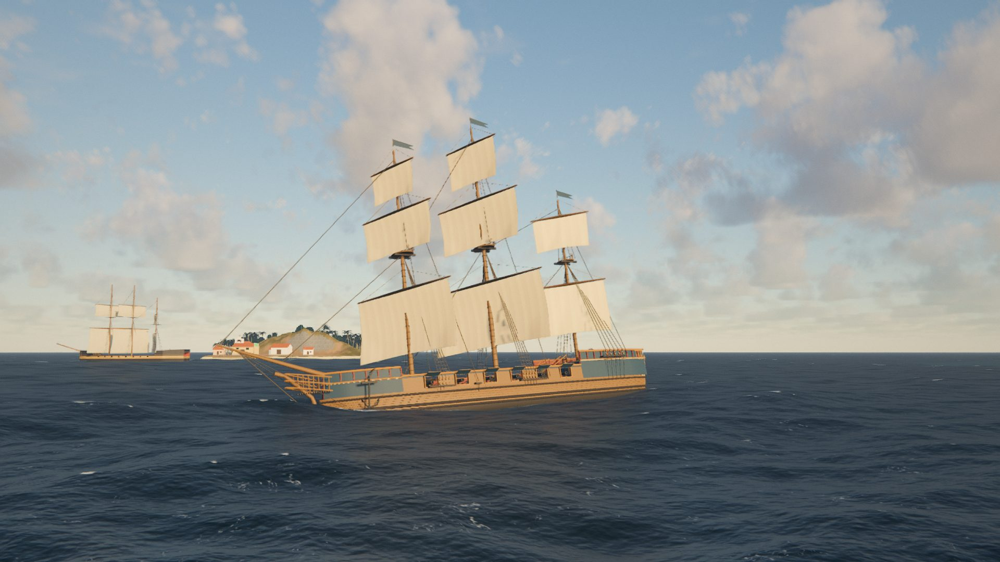

Every station — helm, sails, braces, guns — answers to the captain: captain only, crew, or open to all. Lock the helm and nobody steers her but you. The server enforces it, not good manners.
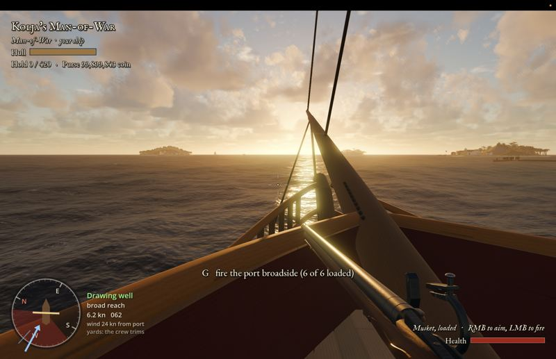
Lay the guns from the cannon view and watch the arc fall where the sea will be when the ball arrives. Then the musket, then the cutlass, then her deck.
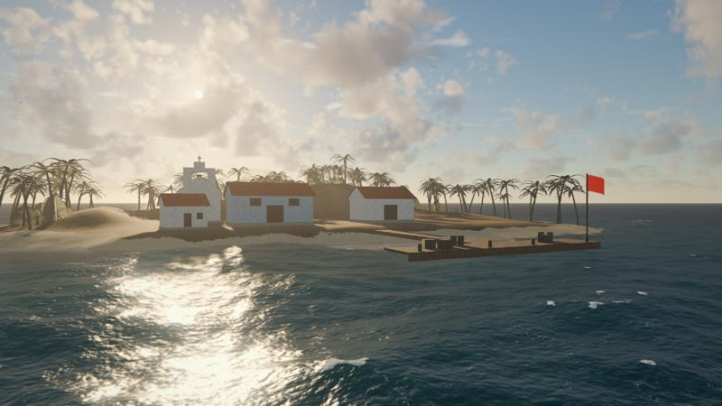
Sugar, rum, tobacco, cotton, spice and silk. Every port keeps its own market and prices move — Tortuga Rasa, Coral Gate, Dead Man's Anchor and the rest. Buy low, sail fast.
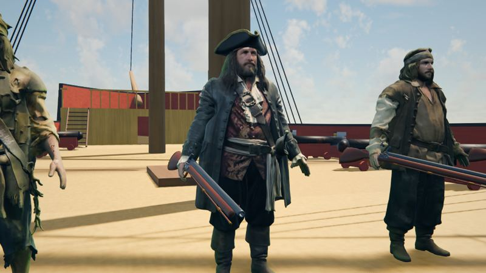
Hire hands at the port. They man the sails and braces, stand to the guns and rush boarders. Strike one and he'll remember it.
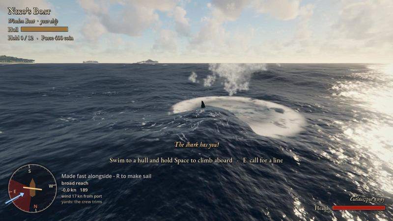
A swimmer gets a few seconds of grace. Then a fin starts circling. The great white doesn't nibble — she comes straight at you, jaws out of the water, and takes you under.
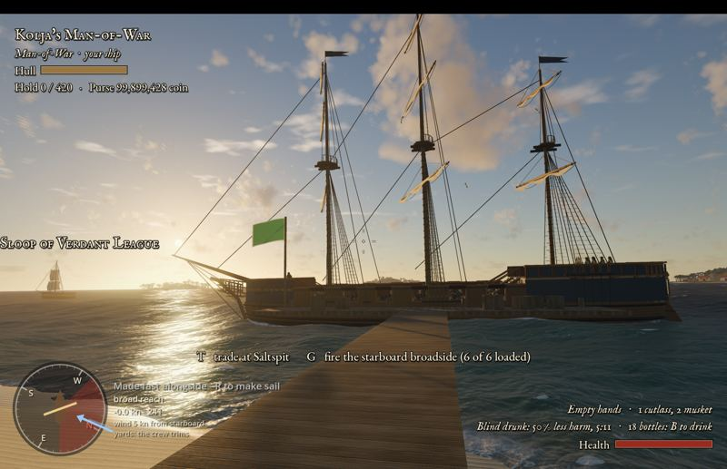
The Crimson Company, the Verdant League and the Azure Crown work the same waters. Bot captains sail and trade alongside real players, so the sea is never empty.
The fleet
Free to every new captain. Logs, a mast and hope.
A better raft for 300 coin, with room for more cargo.
The first real ship. Fast, handy, a few guns.
Two masts, a proper hold, a proper crew.
Broad in the beam, broad in the hold, slow to turn.
Three masts, the deepest hold and the heaviest broadside. Costs a fortune.
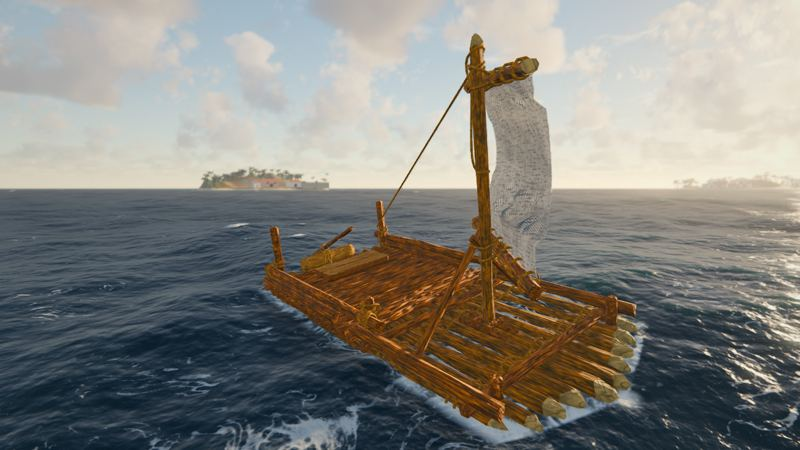
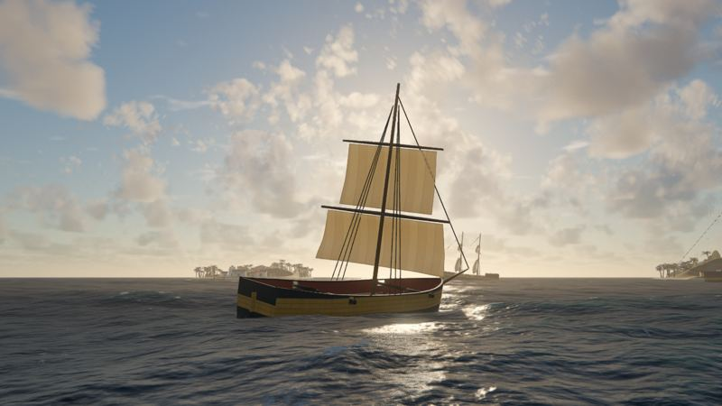
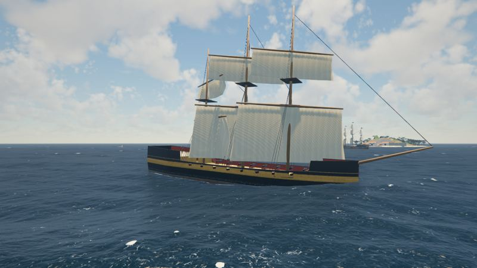
Film
The megalodon: sixteen metres, rare, and only far out in deep water. A swimmer's last seconds, part in slow motion.
Below the waterline
Hunts swimmers near the islands.
Open deep water, far from land. You will not see her often. You will not forget it.
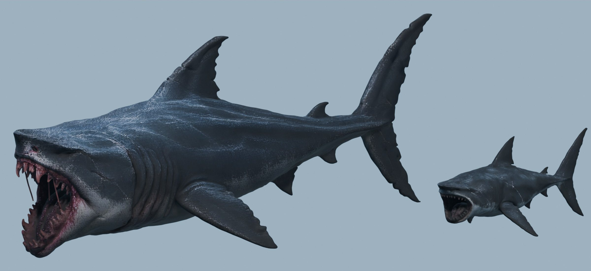
Gallery
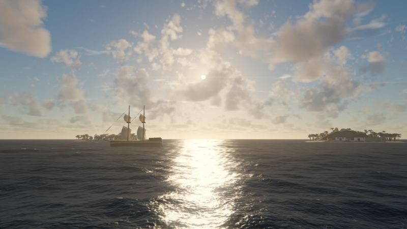
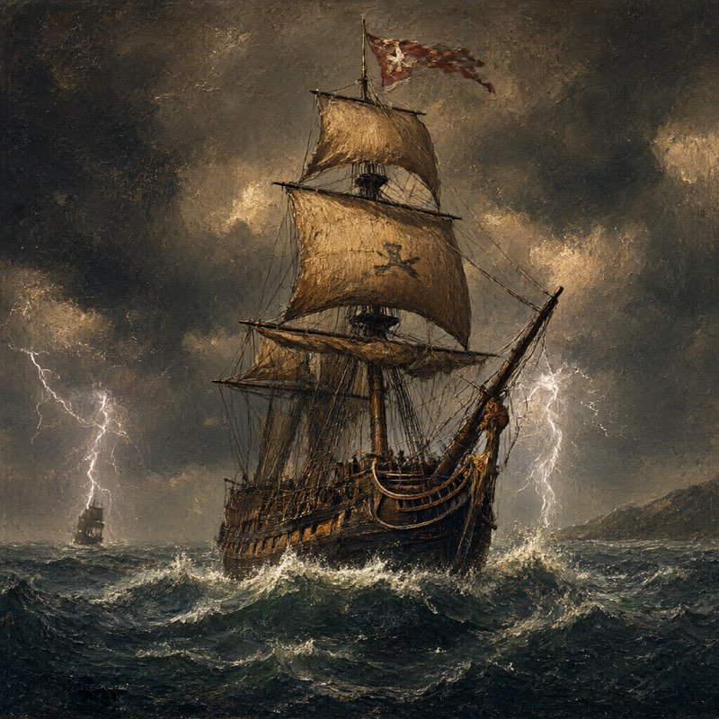
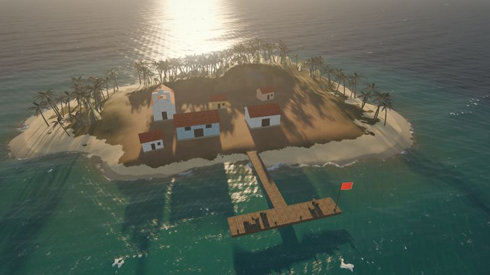
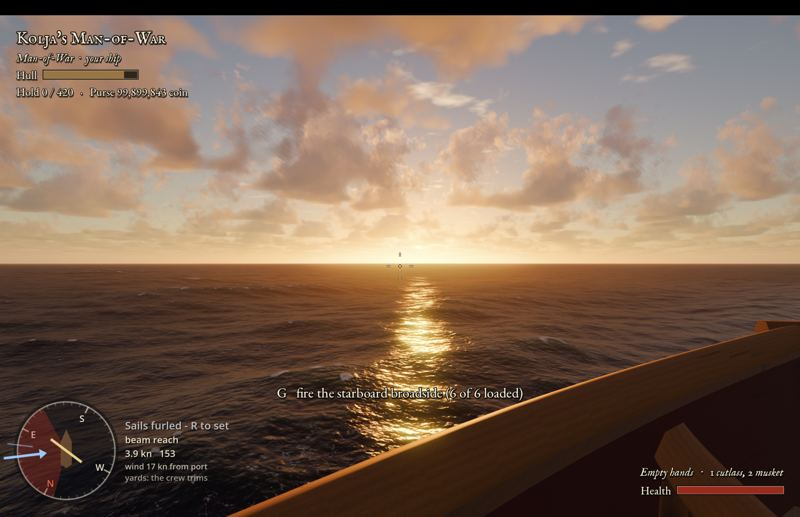
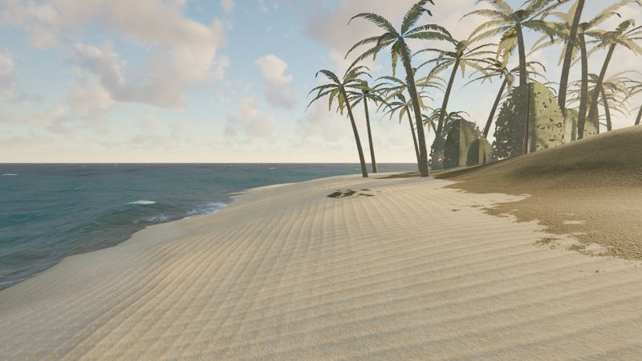
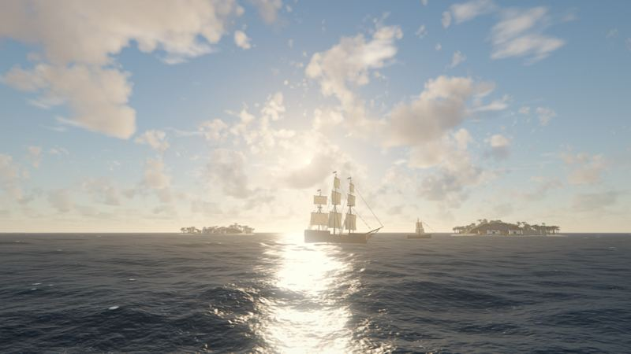
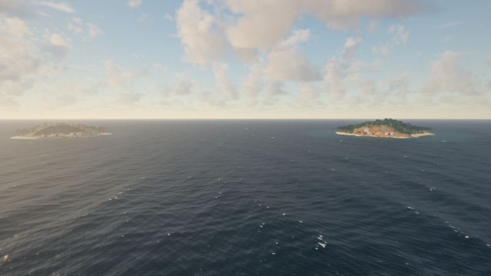
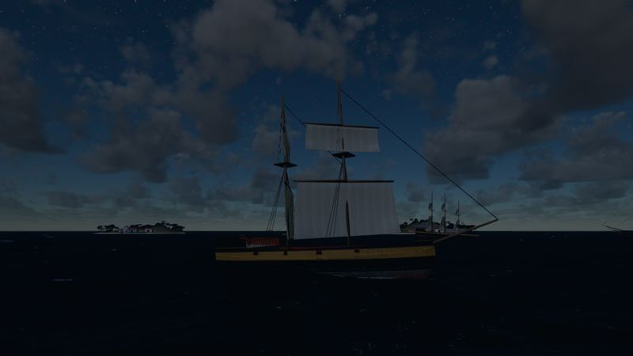
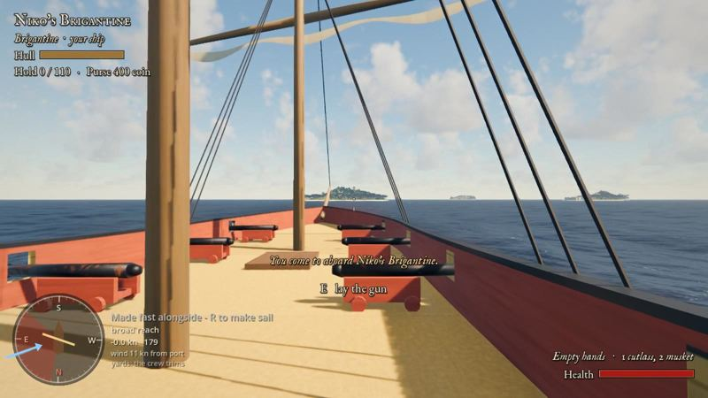
Every screenshot is captured in-engine from a work-in-progress build. The galleon in the storm is concept art.
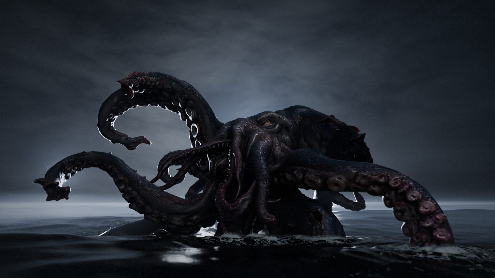
On the horizon
The kraken, modelled and waiting in the deep. What else is being built for the voyages ahead:
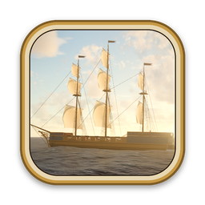